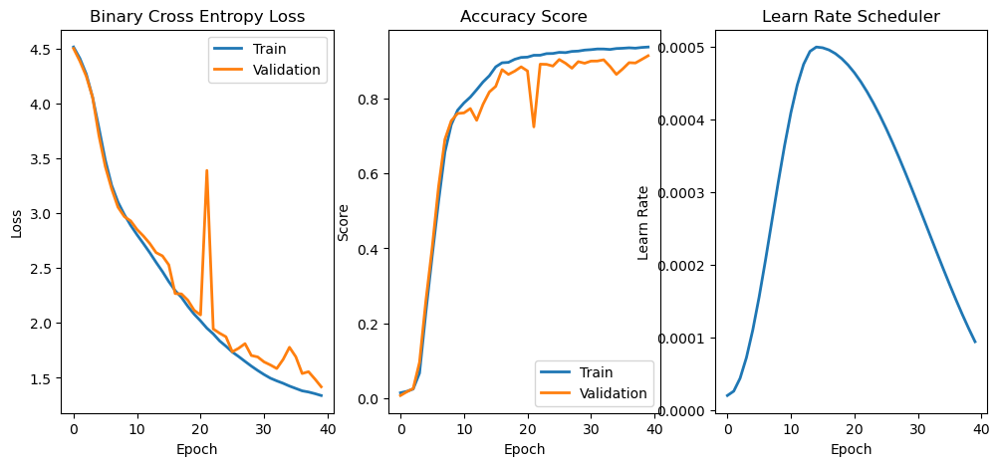

run5 : fold (3 classes) mySmallNet#
img input 3x352x352
fold = 4
3 classes
model = myUNetSmall !!!!
import sys,os
#apped depend on which machine
paths = ['/data/solai/aiArmory/pytorch/', '/home/vlad/max78/aiArmory/pytorch/']
for path in paths:
if os.path.exists(path):
sys.path.append(path)
from armoInclude import *
from armoTrain import basicModel
conf#
# myPC
DATASET_PATH = '/data/tinyai/maxCNN/ai8x-training/data/CamVid'
MODEL_PATH = './unet_model_mySmall_x88_c3_e50_F4.pt'
EPOCHS_TO_RUN = 50
REDO = False
# ## runServer
# DATASET_PATH = '/home/vlad/Data/CamVid'
# MODEL_PATH = '/tmp/unet_model_mySmall_x88_c3_e50_F4.pt'
# REDO = True
# EPOCHS_TO_RUN = 50
INPUT_SIZE = (352, 352)
BATCH_SIZE = 8
## Model - basic reference model with no fold
NUM_CLASS = 4 ## class+1 for none
FOLD_RATIO = 4
NUM_CHANN = 48 ## 3x352x352 -> 48x88x88 (fold=4) !!!!!!!!!!!!!!!!!!!!!!!!!!!!
runDevice = torch.device('cuda:0' if torch.cuda.is_available() else 'cpu') #<! The 1st CUDA device
print(f'runDevice: {runDevice}')
runDevice: cpu
Layers#
class myUNetSmall(nn.Module):
def __init__(self, num_classes=32, num_channels=48, bias=True, fold_ratio=4):
super(myUNetSmall, self).__init__()
self.fold_ratio = fold_ratio
self.num_classes = num_classes
self.num_final_channels = num_classes * fold_ratio * fold_ratio
def depthwise_separable_conv(in_channels, out_channels, kernel_size=3, stride=1, padding=1, bias=True):
return nn.Sequential(
nn.Conv2d(in_channels, in_channels, kernel_size, stride, padding, groups=in_channels, bias=bias),
nn.BatchNorm2d(in_channels),
nn.ReLU(inplace=True),
nn.Conv2d(in_channels, out_channels, kernel_size=1, stride=1, padding=0, bias=bias),
nn.BatchNorm2d(out_channels),
nn.ReLU(inplace=True)
)
self.prep0 = depthwise_separable_conv(num_channels, 32, kernel_size=1, padding=0)
self.prep1 = depthwise_separable_conv(32, 32, kernel_size=1, padding=0)
self.prep2 = depthwise_separable_conv(32, 16, kernel_size=1, padding=0)
self.enc1 = depthwise_separable_conv(16, 8)
self.enc2 = nn.Sequential(
nn.MaxPool2d(kernel_size=2, stride=2),
depthwise_separable_conv(8, 16)
)
self.enc3 = nn.Sequential(
nn.MaxPool2d(kernel_size=2, stride=2),
depthwise_separable_conv(16, 32)
)
self.bneck = nn.Sequential(
nn.MaxPool2d(kernel_size=2, stride=2),
depthwise_separable_conv(32, 64)
)
self.upconv3 = nn.ConvTranspose2d(64, 32, kernel_size=3, stride=2, padding=1, output_padding=1)
self.dec3 = depthwise_separable_conv(64, 32)
self.upconv2 = nn.ConvTranspose2d(32, 16, kernel_size=3, stride=2, padding=1, output_padding=1)
self.dec2 = depthwise_separable_conv(32, 16)
self.upconv1 = nn.ConvTranspose2d(16, 8, kernel_size=3, stride=2, padding=1, output_padding=1)
self.dec1 = depthwise_separable_conv(16, 16)
self.dec0 = depthwise_separable_conv(16, 32)
self.conv_p1 = depthwise_separable_conv(32, 32, kernel_size=1, padding=0)
self.conv_p2 = depthwise_separable_conv(32, 32, kernel_size=1, padding=0)
self.conv_p3 = nn.Sequential(
nn.Conv2d(32, 32, kernel_size=1, stride=1, padding=0, bias=bias),
nn.BatchNorm2d(32)
)
self.conv = nn.Sequential(
nn.Conv2d(32, self.num_final_channels, kernel_size=1, stride=1, padding=0, bias=bias),
nn.BatchNorm2d(self.num_final_channels)
)
def forward(self, x):
x = self.prep0(x)
x = self.prep1(x)
x = self.prep2(x)
enc1 = self.enc1(x)
enc2 = self.enc2(enc1)
enc3 = self.enc3(enc2)
bottleneck = self.bneck(enc3)
dec3 = self.upconv3(bottleneck)
dec3 = torch.cat((dec3, enc3), dim=1)
dec3 = self.dec3(dec3)
dec2 = self.upconv2(dec3)
dec2 = torch.cat((dec2, enc2), dim=1)
dec2 = self.dec2(dec2)
dec1 = self.upconv1(dec2)
dec1 = torch.cat((dec1, enc1), dim=1)
dec1 = self.dec1(dec1)
dec0 = self.dec0(dec1)
dec0 = self.conv_p1(dec0)
dec0 = self.conv_p2(dec0)
dec0 = self.conv_p3(dec0)
dec0 = self.conv(dec0)
return dec0
data#
filter_label = [0,5,21,17] # car sky road
from torchvision import transforms
from PIL import Image
class Fold:
"""
Fold data to increase the number of channels. An interlaced approach is used in this folding
as explained in [1].
[1] https://arxiv.org/pdf/2203.16528.pdf
"""
def __init__(self, fold_ratio):
self.fold_ratio = fold_ratio
self.to_tensor = transforms.ToTensor()
def __call__(self, img):
# Convert PIL image to tensor
if isinstance(img, torch.Tensor):
img_tensor = img
else:
img_tensor = self.to_tensor(img)
if self.fold_ratio == 1:
return img
img_folded = None
for i in range(self.fold_ratio):
for j in range(self.fold_ratio):
img_subsample = img_tensor[:, i::self.fold_ratio, j::self.fold_ratio]
if img_folded is not None:
img_folded = torch.cat((img_folded, img_subsample), dim=0)
else:
img_folded = img_subsample
return img_folded
def unfold(img_batch, fold_ratio):
"""
Unfold data to reduce the number of channels. An interlaced approach used in this folding
as explained in [1]. This operation is the reverse of the transformation implemented
at ai8x.fold class.
[1] https://arxiv.org/pdf/2203.16528.pdf
"""
if fold_ratio == 1:
return img_batch
num_out_channels = img_batch.shape[1] // (fold_ratio*fold_ratio)
img_batch_uf = torch.zeros((img_batch.shape[0], num_out_channels,
img_batch.shape[2]*fold_ratio, img_batch.shape[3]*fold_ratio),
dtype=img_batch.dtype, device=img_batch.device, requires_grad=False)
for i in range(fold_ratio):
for j in range(fold_ratio):
ch_index_start = num_out_channels*(i*fold_ratio + j)
ch_index_end = num_out_channels * (i*fold_ratio + j + 1)
img_batch_uf[:, :, i::fold_ratio, j::fold_ratio] = \
img_batch[:, ch_index_start:ch_index_end, :, :]
return img_batch_uf
class CamVidDataset(Dataset):
def __init__(self, image_dir, label_dir, image_transform=None, label_transform=None):
self.image_dir = image_dir
self.label_dir = label_dir
self.image_transform = image_transform
self.label_transform = label_transform
self.image_paths = sorted([os.path.join(image_dir, f) for f in os.listdir(image_dir)])
self.label_paths = sorted([os.path.join(label_dir, f) for f in os.listdir(label_dir)])
# Load class dictionary
class_dict_path = os.path.join(DATASET_PATH, 'class_dict.csv')
class_dict = pd.read_csv(class_dict_path)
self.colormap = np.zeros((256**3,), dtype=int)
if filter_label:
print(f"...will filter classes")
class_dict_filter = class_dict.filter(filter_label, axis=0)
else:
class_dict_filter = class_dict
for i, row in class_dict_filter.iterrows():
r, g, b = row['r'], row['g'], row['b']
self.colormap[r * 256**2 + g * 256 + b] = i
def __len__(self):
return len(self.image_paths)
def __getitem__(self, idx):
image = Image.open(self.image_paths[idx]).convert('RGB')
label = Image.open(self.label_paths[idx]).convert('RGB')
if self.image_transform:
image = self.image_transform(image)
if self.label_transform:
label = self.label_transform(label)
## RGB to categorical = 1x352x352
label = self.encode_segmap(np.array(label)) # Convert label to numpy array before encoding
if filter_label:
mapping = {old_value: new_index for new_index, old_value in enumerate(filter_label)}
## nromilize label by mapping
label = np.vectorize(mapping.get)(label)
foldOperator = Fold(FOLD_RATIO)
label_fold = foldOperator(label) ## 16x88x88
# unfold_label = torch.argmax(label_fold, dim=0) ## 1x88x88
unfold_label, _ = torch.max(label_fold, dim=0)
# ## fold after encoding
# foldOperator = Fold(FOLD_RATIO)
# # duplicate label to 3 channels
# label_tensor = torch.tensor(label, dtype=torch.int64)
# label_tensor_3ch = label_tensor.unsqueeze(0).repeat(3, 1, 1)
# # fold label
# label = foldOperator(label_tensor_3ch)
return image, unfold_label
def encode_segmap(self, mask):
mask = mask.astype(int)
index = mask[:, :, 0] * 256**2 + mask[:, :, 1] * 256 + mask[:, :, 2]
return self.colormap[index]
# Step 4: Data Transformation and DataLoader
image_transform = TorchVisionTrns.Compose([
TorchVisionTrns.Resize(INPUT_SIZE),
Fold(FOLD_RATIO),
TorchVisionTrns.ToTensor()
])
label_transform = TorchVisionTrns.Compose([
TorchVisionTrns.Resize(INPUT_SIZE),
# Fold(FOLD_RATIO),
])
train_dataset = CamVidDataset(
image_dir=os.path.join(DATASET_PATH, 'train'),
label_dir=os.path.join(DATASET_PATH, 'train_labels'),
image_transform=image_transform,
label_transform=label_transform
)
val_dataset = CamVidDataset(
## change to have more data in val then in test
image_dir=os.path.join(DATASET_PATH, 'test'),
label_dir=os.path.join(DATASET_PATH, 'test_labels'),
image_transform=image_transform,
label_transform=label_transform
)
test_dataset = CamVidDataset(
## change to have more data in val then in test
image_dir=os.path.join(DATASET_PATH, 'val'),
label_dir=os.path.join(DATASET_PATH, 'val_labels'),
image_transform=image_transform,
label_transform=label_transform
)
dlTrain = DataLoader(train_dataset, batch_size=BATCH_SIZE, shuffle=True)
dlVal = DataLoader(val_dataset, batch_size=BATCH_SIZE, shuffle=False)
dlTest = DataLoader(test_dataset, batch_size=BATCH_SIZE, shuffle=False)
...will filter classes
...will filter classes
...will filter classes
/data/solai/venvMamabaFixel/lib/python3.11/site-packages/torchvision/transforms/v2/_deprecated.py:42: UserWarning: The transform `ToTensor()` is deprecated and will be removed in a future release. Instead, please use `v2.Compose([v2.ToImage(), v2.ToDtype(torch.float32, scale=True)])`.Output is equivalent up to float precision.
warnings.warn(
print(f"train_loader len = {len(dlTrain.dataset)}")
print(f"val_loader len = {len(dlVal.dataset)}")
print(f"test_loader len = {len(dlTest.dataset)}")
train_loader len = 100
val_loader len = 100
test_loader len = 100
model#
oModel = myUNetSmall(num_classes=NUM_CLASS, num_channels=NUM_CHANN, bias=True, fold_ratio=FOLD_RATIO)
oModel = oModel.to(runDevice)
myTrain = basicModel(model=oModel,CheckpointFile=MODEL_PATH)
loss#
hL = nn.CrossEntropyLoss()
hL = hL.to(runDevice)
score#
# Given the shape of outputs is [8, 32, 80, 80],
# applying torch.max(outputs, 1) will reduce the dimension
# from 32 to 1 by finding the maximum value along the
# second dimension (dim=1).
# vals: will be The maximum values along the specified dimension (dim=1)
# preds: The indices of the maximum values along the specified dimension
# with shape of preds will be [8, 80, 80].
def hS(outputs, labels):
vals , preds = torch.max(outputs, 1)
corrects = torch.sum(preds.data == labels.data)
return corrects.double() / labels.numel()
optimizer#
oOpt = torch.optim.AdamW(oModel.parameters(), lr = 1e-4, betas = (0.9, 0.99), weight_decay = 1e-5)
scheduler#
oSch = torch.optim.lr_scheduler.OneCycleLR(oOpt, max_lr = 5e-4, total_steps = EPOCHS_TO_RUN)
summary#
myTrain.verify( dlTrain, dlVal, oOpt, EPOCHS_TO_RUN , BATCH_SIZE , hL, hS, oSch = oSch)
======================= info =========================================================
numEpoch = 50 ; batchSize = 8
Train:
len train dataset 100 / batchSize 8 = len Train 13
dlTrain: iter tX shape = torch.Size([8, 48, 88, 88])
dlTrain: iter vY ; shape = torch.Size([8, 88, 88])
Val:
dlVal : tensor[0].shape = torch.Size([8, 48, 88, 88])
dlVal : tensor[1].shape = torch.Size([8, 88, 88])
======================= summary =========================================================
==========================================================================================
Layer (type:depth-idx) Output Shape Param #
==========================================================================================
myUNetSmall [8, 64, 88, 88] --
├─Sequential: 1-1 [8, 32, 88, 88] --
│ └─Conv2d: 2-1 [8, 48, 88, 88] 96
│ └─BatchNorm2d: 2-2 [8, 48, 88, 88] 96
│ └─ReLU: 2-3 [8, 48, 88, 88] --
│ └─Conv2d: 2-4 [8, 32, 88, 88] 1,568
│ └─BatchNorm2d: 2-5 [8, 32, 88, 88] 64
│ └─ReLU: 2-6 [8, 32, 88, 88] --
├─Sequential: 1-2 [8, 32, 88, 88] --
│ └─Conv2d: 2-7 [8, 32, 88, 88] 64
│ └─BatchNorm2d: 2-8 [8, 32, 88, 88] 64
│ └─ReLU: 2-9 [8, 32, 88, 88] --
│ └─Conv2d: 2-10 [8, 32, 88, 88] 1,056
│ └─BatchNorm2d: 2-11 [8, 32, 88, 88] 64
│ └─ReLU: 2-12 [8, 32, 88, 88] --
├─Sequential: 1-3 [8, 16, 88, 88] --
│ └─Conv2d: 2-13 [8, 32, 88, 88] 64
│ └─BatchNorm2d: 2-14 [8, 32, 88, 88] 64
│ └─ReLU: 2-15 [8, 32, 88, 88] --
│ └─Conv2d: 2-16 [8, 16, 88, 88] 528
│ └─BatchNorm2d: 2-17 [8, 16, 88, 88] 32
│ └─ReLU: 2-18 [8, 16, 88, 88] --
├─Sequential: 1-4 [8, 8, 88, 88] --
│ └─Conv2d: 2-19 [8, 16, 88, 88] 160
│ └─BatchNorm2d: 2-20 [8, 16, 88, 88] 32
│ └─ReLU: 2-21 [8, 16, 88, 88] --
│ └─Conv2d: 2-22 [8, 8, 88, 88] 136
│ └─BatchNorm2d: 2-23 [8, 8, 88, 88] 16
│ └─ReLU: 2-24 [8, 8, 88, 88] --
├─Sequential: 1-5 [8, 16, 44, 44] --
│ └─MaxPool2d: 2-25 [8, 8, 44, 44] --
│ └─Sequential: 2-26 [8, 16, 44, 44] --
│ │ └─Conv2d: 3-1 [8, 8, 44, 44] 80
│ │ └─BatchNorm2d: 3-2 [8, 8, 44, 44] 16
│ │ └─ReLU: 3-3 [8, 8, 44, 44] --
│ │ └─Conv2d: 3-4 [8, 16, 44, 44] 144
│ │ └─BatchNorm2d: 3-5 [8, 16, 44, 44] 32
│ │ └─ReLU: 3-6 [8, 16, 44, 44] --
├─Sequential: 1-6 [8, 32, 22, 22] --
│ └─MaxPool2d: 2-27 [8, 16, 22, 22] --
│ └─Sequential: 2-28 [8, 32, 22, 22] --
│ │ └─Conv2d: 3-7 [8, 16, 22, 22] 160
│ │ └─BatchNorm2d: 3-8 [8, 16, 22, 22] 32
│ │ └─ReLU: 3-9 [8, 16, 22, 22] --
│ │ └─Conv2d: 3-10 [8, 32, 22, 22] 544
│ │ └─BatchNorm2d: 3-11 [8, 32, 22, 22] 64
│ │ └─ReLU: 3-12 [8, 32, 22, 22] --
├─Sequential: 1-7 [8, 64, 11, 11] --
│ └─MaxPool2d: 2-29 [8, 32, 11, 11] --
│ └─Sequential: 2-30 [8, 64, 11, 11] --
│ │ └─Conv2d: 3-13 [8, 32, 11, 11] 320
│ │ └─BatchNorm2d: 3-14 [8, 32, 11, 11] 64
│ │ └─ReLU: 3-15 [8, 32, 11, 11] --
│ │ └─Conv2d: 3-16 [8, 64, 11, 11] 2,112
│ │ └─BatchNorm2d: 3-17 [8, 64, 11, 11] 128
│ │ └─ReLU: 3-18 [8, 64, 11, 11] --
├─ConvTranspose2d: 1-8 [8, 32, 22, 22] 18,464
├─Sequential: 1-9 [8, 32, 22, 22] --
│ └─Conv2d: 2-31 [8, 64, 22, 22] 640
│ └─BatchNorm2d: 2-32 [8, 64, 22, 22] 128
│ └─ReLU: 2-33 [8, 64, 22, 22] --
│ └─Conv2d: 2-34 [8, 32, 22, 22] 2,080
│ └─BatchNorm2d: 2-35 [8, 32, 22, 22] 64
│ └─ReLU: 2-36 [8, 32, 22, 22] --
├─ConvTranspose2d: 1-10 [8, 16, 44, 44] 4,624
├─Sequential: 1-11 [8, 16, 44, 44] --
│ └─Conv2d: 2-37 [8, 32, 44, 44] 320
│ └─BatchNorm2d: 2-38 [8, 32, 44, 44] 64
│ └─ReLU: 2-39 [8, 32, 44, 44] --
│ └─Conv2d: 2-40 [8, 16, 44, 44] 528
│ └─BatchNorm2d: 2-41 [8, 16, 44, 44] 32
│ └─ReLU: 2-42 [8, 16, 44, 44] --
├─ConvTranspose2d: 1-12 [8, 8, 88, 88] 1,160
├─Sequential: 1-13 [8, 16, 88, 88] --
│ └─Conv2d: 2-43 [8, 16, 88, 88] 160
│ └─BatchNorm2d: 2-44 [8, 16, 88, 88] 32
│ └─ReLU: 2-45 [8, 16, 88, 88] --
│ └─Conv2d: 2-46 [8, 16, 88, 88] 272
│ └─BatchNorm2d: 2-47 [8, 16, 88, 88] 32
│ └─ReLU: 2-48 [8, 16, 88, 88] --
├─Sequential: 1-14 [8, 32, 88, 88] --
│ └─Conv2d: 2-49 [8, 16, 88, 88] 160
│ └─BatchNorm2d: 2-50 [8, 16, 88, 88] 32
│ └─ReLU: 2-51 [8, 16, 88, 88] --
│ └─Conv2d: 2-52 [8, 32, 88, 88] 544
│ └─BatchNorm2d: 2-53 [8, 32, 88, 88] 64
│ └─ReLU: 2-54 [8, 32, 88, 88] --
├─Sequential: 1-15 [8, 32, 88, 88] --
│ └─Conv2d: 2-55 [8, 32, 88, 88] 64
│ └─BatchNorm2d: 2-56 [8, 32, 88, 88] 64
│ └─ReLU: 2-57 [8, 32, 88, 88] --
│ └─Conv2d: 2-58 [8, 32, 88, 88] 1,056
│ └─BatchNorm2d: 2-59 [8, 32, 88, 88] 64
│ └─ReLU: 2-60 [8, 32, 88, 88] --
├─Sequential: 1-16 [8, 32, 88, 88] --
│ └─Conv2d: 2-61 [8, 32, 88, 88] 64
│ └─BatchNorm2d: 2-62 [8, 32, 88, 88] 64
│ └─ReLU: 2-63 [8, 32, 88, 88] --
│ └─Conv2d: 2-64 [8, 32, 88, 88] 1,056
│ └─BatchNorm2d: 2-65 [8, 32, 88, 88] 64
│ └─ReLU: 2-66 [8, 32, 88, 88] --
├─Sequential: 1-17 [8, 32, 88, 88] --
│ └─Conv2d: 2-67 [8, 32, 88, 88] 1,056
│ └─BatchNorm2d: 2-68 [8, 32, 88, 88] 64
├─Sequential: 1-18 [8, 64, 88, 88] --
│ └─Conv2d: 2-69 [8, 64, 88, 88] 2,112
│ └─BatchNorm2d: 2-70 [8, 64, 88, 88] 128
==========================================================================================
Total params: 43,056
Trainable params: 43,056
Non-trainable params: 0
Total mult-adds (Units.MEGABYTES): 880.10
==========================================================================================
Input size (MB): 11.89
Forward/backward pass size (MB): 550.63
Params size (MB): 0.17
Estimated Total Size (MB): 562.70
==========================================================================================
======================= verify =========================================================
ERROR: last layer size [8, 64, 88, 88] != vY shape [8, 88, 88] ; FAIL
==========================================================================================
train#
## train or load:
if REDO == True:
trained = myTrain.TrainModel(dlTrain, dlVal, oOpt, EPOCHS_TO_RUN, hL, hS, oSch = oSch)
else:
trained = myTrain.loadModel(MODEL_PATH)
model loaded from ./unet_model_mySmall_x88_c3_e50_F4.pt
results#
myTrain.plotTrainResults()

loss on test#
test_score = myTrain.evaluate_test_data(testData = dlTest ,score_fn=hS)
Test Score: 0.9289164315797839
test case examine#
def visualize_prediction(model, dataset, index):
model.eval()
image, label = dataset[index]
image = image.unsqueeze(0)
unfold_img=unfold(image, FOLD_RATIO)
with torch.no_grad():
output = model(image)
pred = torch.argmax(output, dim=1).cpu().squeeze(0) # Remove batch dimension and move to CPU
# Debugging: Check unique values in the output and prediction
print("Unique values in the raw output:", np.unique(output.cpu().numpy()))
print("Unique values in the predicted segmentation:", np.unique(pred.numpy()))
# Convert the tensors to images for visualization
unfold_img = unfold_img.cpu().squeeze(0).permute(1, 2, 0) # Convert from (C, H, W) to (H, W, C)
label = label.cpu()
pred = pred.cpu()
# Plot the images
fig, ax = plt.subplots(1, 3, figsize=(15, 5))
ax[0].imshow(unfold_img)
ax[0].set_title('Input Image')
ax[0].axis('off')
ax[1].imshow(label)
ax[1].set_title('Ground Truth')
ax[1].axis('off')
ax[2].imshow(pred)
ax[2].set_title('Predicted Segmentation')
ax[2].axis('off')
plt.show()
# Visualize prediction on a sample image from the validation set
visualize_prediction(myTrain.model, val_dataset, index=1)
Unique values in the raw output: [-1.6643046 -1.6031445 -1.602401 ... 12.445987 12.658648 12.721593 ]
Unique values in the predicted segmentation: [0 1 2 3]
new test#
from PIL import Image, ImageOps
def visualize_new_prediction(model,new_image_path):
if not os.path.exists(new_image_path):
return None
model.eval()
image = Image.open(new_image_path).convert('RGB')
## make the same size as the training image
print(f"orig image.size = {image.size}")
test_size = (960, 720)
image = ImageOps.fit(image, test_size, method=Image.LANCZOS)
print(f"image.size = {image.size}")
image_tensor = image_transform(image).unsqueeze(0)
with torch.no_grad():
output = model(image_tensor)
pred = torch.argmax(output, dim=1).cpu().squeeze(0) # Remove batch dimension and move to CPU
# Convert the tensor image to numpy for visualization
image_tensor = unfold(image_tensor, FOLD_RATIO)
image_model = image_tensor.cpu().squeeze(0).permute(1, 2, 0).numpy() # Convert from (C, H, W) to (H, W, C)
# Plot the images
fig, ax = plt.subplots(1, 3, figsize=(15, 5))
ax[0].imshow(image)
ax[0].set_title('Input Image')
ax[0].axis('off')
ax[1].imshow(image_model)
ax[1].set_title('Model Image')
ax[1].axis('off')
ax[2].imshow(pred)
ax[2].set_title('Predicted Segmentation')
ax[2].axis('off')
plt.show()
visualize_new_prediction(myTrain.model,'/home/vlad/Data/myTestImg/carPark1.jpeg')
visualize_new_prediction(myTrain.model,'/data/tinyai/maxCNN/ai8x-training/data/CamVid/test/0016E5_08025.png')
visualize_new_prediction(myTrain.model,'/data/solai/projB/1_unteSmall/results/carPark1.jpeg')
visualize_new_prediction(myTrain.model,'/data/solai/projB/1_unteSmall/results/newTest1.jpg')
orig image.size = (960, 720)
image.size = (960, 720)
orig image.size = (721, 1600)
image.size = (960, 720)
orig image.size = (400, 300)
image.size = (960, 720)
report#
print(f"trainning : EPOCHS_TO_RUN={EPOCHS_TO_RUN} ; batch={BATCH_SIZE}")
print(f"model : file={MODEL_PATH}")
print(f"input data : train_len = {len(dlTrain.dataset)} ; test_len={len(dlVal.dataset)} ; val_len={len(dlTest.dataset)} ")
print(f"img input : INPUT_SIZE={INPUT_SIZE}")
print(f"model : NUM_CLASS={NUM_CLASS} ; NUM_CHANN={NUM_CHANN} ; FOLD_RATIO={FOLD_RATIO}")
print(f"score : val_score={myTrain.lValScore[-1]} ; val_loss {myTrain.lValLoss[-1]}")
print(f" : test_score={test_score}")
print(f"Trainable parameters: {myTrain.parma_stat()['trainable_params']}")
print(f"parameters_size_in_megabytes : {myTrain.parma_stat()['total_size_in_megabytes']}")
trainning : EPOCHS_TO_RUN=50 ; batch=8
model : file=./unet_model_mySmall_x88_c3_e50_F4.pt
input data : train_len = 100 ; test_len=100 ; val_len=100
img input : INPUT_SIZE=(352, 352)
model : NUM_CLASS=4 ; NUM_CHANN=48 ; FOLD_RATIO=4
score : val_score=0.9131630272157311 ; val_loss 1.4180119119841477
: test_score=0.9289164315797839
Trainable parameters: 43056
parameters_size_in_megabytes : 0.16424560546875